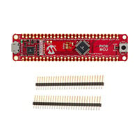
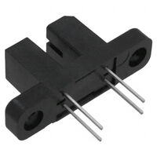
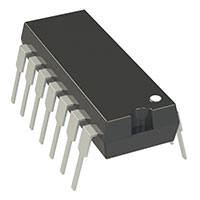
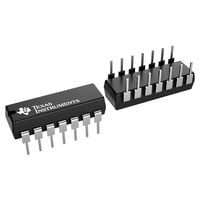
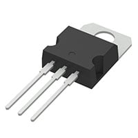
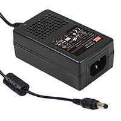

A1 · 1 piece
### DM164150
PIC18F57Q43 Curiosity Nano
**$10.61 each · $10.61 extended**
[Supplier & price](https://www.digikey.com/en/products/detail/microchip-technology/DM164150/11586705) · [Manufacturer documentation](https://www.digikey.com/en/products/detail/microchip-technology/DM164150/11586705)

Q1–Q4 · 4 pieces
### TCST2103
Bare optical interrupter, 3.1 mm slot
**$1.84 each · $7.36 extended**
[Supplier & price](https://www.digikey.com/en/products/detail/vishay-semiconductor-opto-division/TCST2103/2354849) · [Manufacturer documentation](https://www.vishay.com/docs/81147/tcst2103.pdf)

U2 · 1 piece
### MCP6004-I/P
Quad rail-to-rail op-amp, PDIP-14
**$0.60 each · $0.60 extended**
[Supplier & price](https://www.digikey.com/en/products/detail/MCP6004-I%2FP/MCP6004-I%2FP-ND/523060) · [Manufacturer documentation](https://ww1.microchip.com/downloads/en/DeviceDoc/MCP6001-1R-1U-2-4-1-MHz-Low-Power-Op-Amp-DS20001733L.pdf)

U3 · 1 piece
### SN74HC14N
Hex Schmitt inverter, PDIP-14
**$1.15 each · $1.15 extended**
[Supplier & price](https://www.digikey.com/en/products/detail/texas-instruments/SN74HC14N/277223) · [Manufacturer documentation](https://www.digikey.com/en/products/detail/texas-instruments/SN74HC14N/277223)

U1 · 1 piece
### L7805ACV
5 V linear regulator, TO-220
**$1.22 each · $1.22 extended**
[Supplier & price](https://www.digikey.com/en/products/detail/stmicroelectronics/L7805ACV/585962) · [Manufacturer documentation](https://www.st.com/content/ccc/resource/technical/document/datasheet/41/4f/b3/b0/12/d4/47/88/CD00000444.pdf/files/CD00000444.pdf/jcr%3Acontent/translations/en.CD00000444.pdf)

EXTERNAL POWER · PURCHASING CANDIDATE
### GST18A09-P1J
9 V / 2 A desktop supply; input cord sold separately.
**$14.10 each**
[Supplier & price](https://www.digikey.com/en/products/detail/mean-well-usa-inc/GST18A09-P1J/7703606) · [Datasheet](https://www.meanwellusa.com/upload/pdf/GST18A/GST18A-spec.pdf)